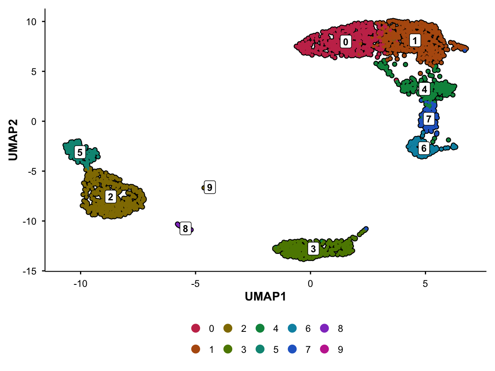
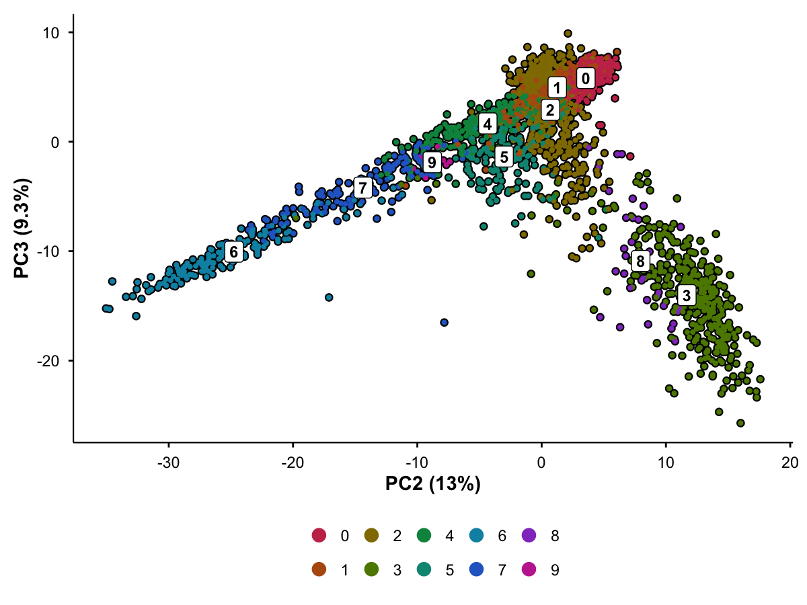
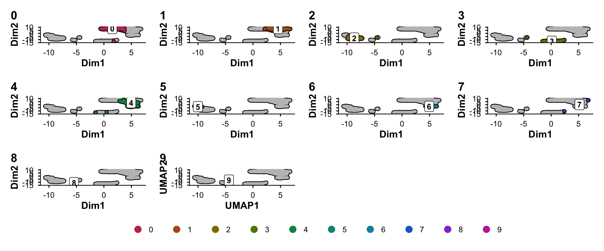
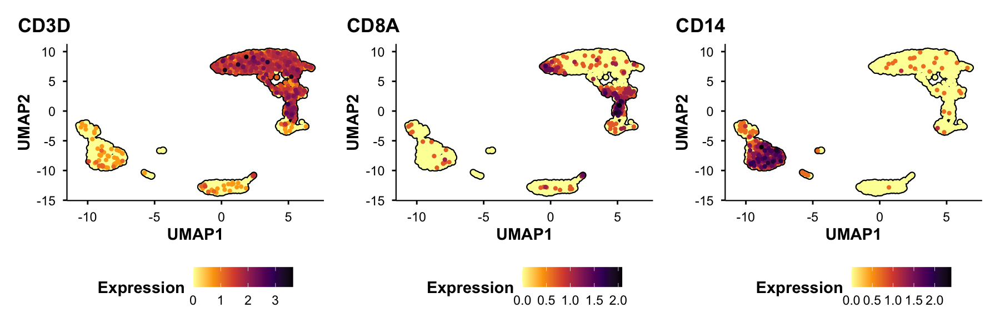
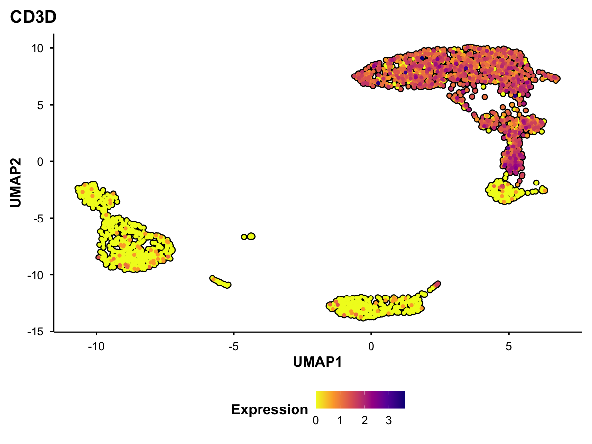
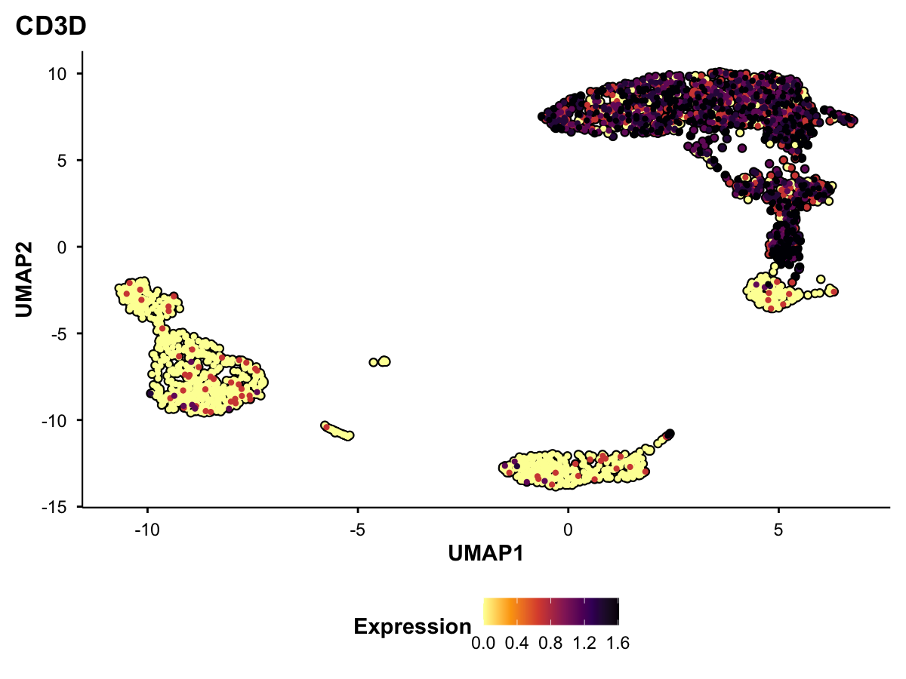
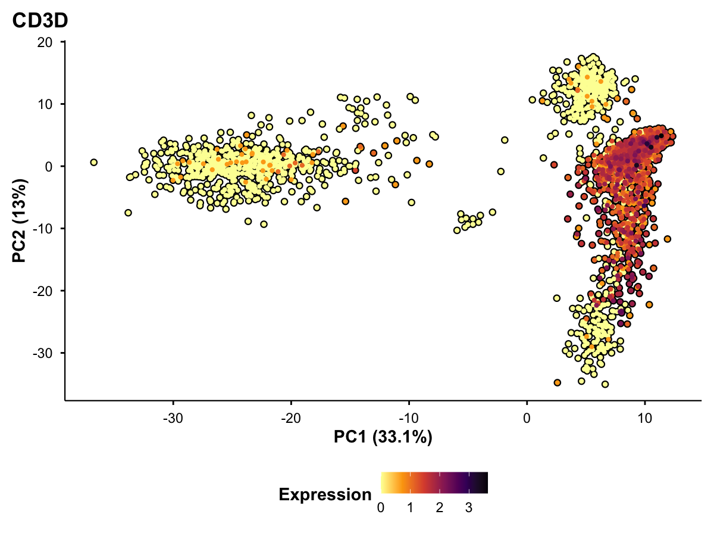
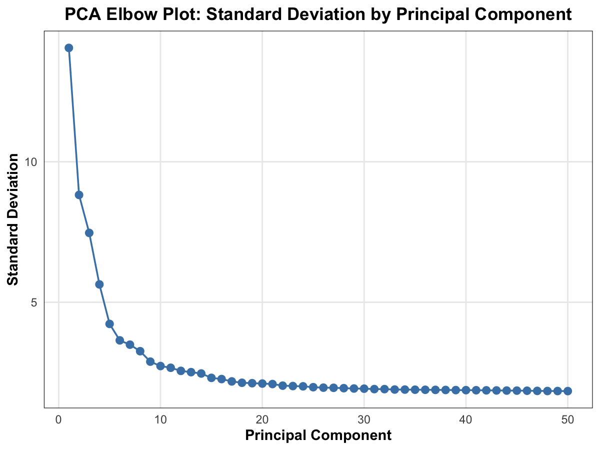
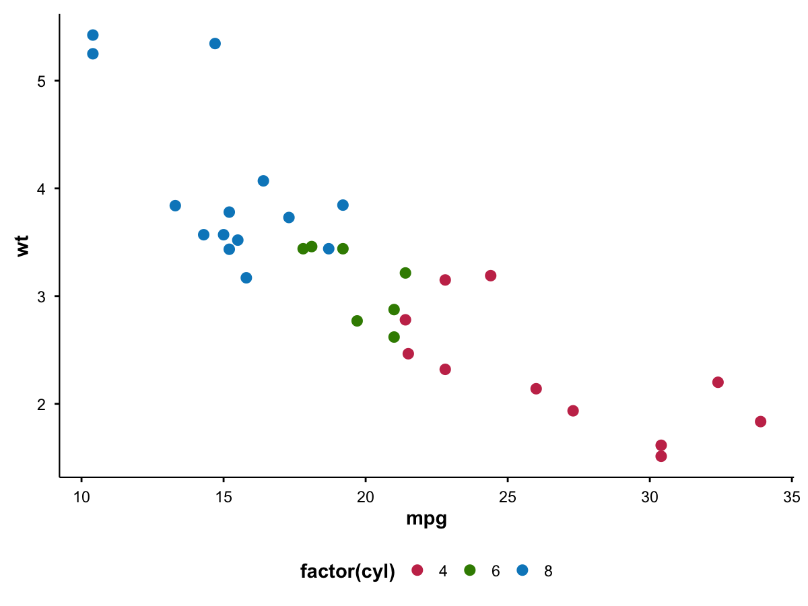

BadranSeq provides publication-ready visualization tools for single-cell RNA sequencing (scRNA-Seq) data, built on native ggplot2 with consistent, beautiful defaults.
Why BadranSeq?
If you’ve ever spent time customizing Seurat plots for publication, you know the pain:
| Problem | Seurat Default | BadranSeq Solution |
|---|---|---|
| PCA plots lack context | No variance explained | Automatic variance % on axes |
| Cells blend together | No borders | Black cell borders for clarity |
| Split comparisons lose context | Facets only show subset | Grey silhouettes of all cells |
| Repetitive styling | Minimal defaults | Publication-ready out of the box |
| No cluster labels | Must add manually | Labels shown by default |
BadranSeq is lightweight (native ggplot2, no heavy dependencies) and opinionated (sensible defaults so you can focus on biology, not aesthetics).
Installation
# Using pak (recommended)
if (!require(pak)) install.packages("pak")
pak::pkg_install("wolf5996/BadranSeq")
# Or using devtools
if (!require(devtools)) install.packages("devtools")
devtools::install_github("wolf5996/BadranSeq")Function Examples
BadranSeq::do_UmapPlot() - UMAP Visualization
Why it’s better: Shows cluster labels by default, includes axis labels, and renders cells with black borders for clear visibility even in dense regions.
Basic Usage
BadranSeq::do_UmapPlot(pbmc3k)
#> Loading required namespace: SeuratObjectCustomization Options
# Color by a different metadata column
BadranSeq::do_UmapPlot(pbmc3k, group.by = "seurat_clusters", label = TRUE)
BadranSeq::do_PcaPlot() - PCA with Variance Explained
Why it’s better: Automatically calculates and displays variance explained percentages on the axes. No more manual calculation of (stdev^2 / sum(stdev^2)) * 100.
Basic Usage
BadranSeq::do_PcaPlot(pbmc3k)Notice the axis labels show “PC1 (X.X%)” - this is calculated automatically from the Seurat object’s PCA standard deviations.
Different PC Dimensions
# Plot PC2 vs PC3
BadranSeq::do_PcaPlot(pbmc3k, dims = c(2, 3))
BadranSeq::do_DimPlot() - Universal Dimensionality Reduction
Why it’s better: Single entry point that automatically routes to the appropriate specialized function (PCA gets variance labels, UMAP gets standard labels).
# Automatically uses UMAP
BadranSeq::do_DimPlot(pbmc3k)
# Routes to BadranSeq::do_PcaPlot() with variance labels
BadranSeq::do_DimPlot(pbmc3k, reduction = "pca")Split.by with Silhouettes
Why it’s better: When comparing populations across conditions, standard faceting only shows cells in each category. You lose spatial context. BadranSeq’s silhouette approach shows all cells in grey as background, with only the current category colored - so you can see where your population sits relative to the whole dataset.
BadranSeq::do_UmapPlot(pbmc3k, split.by = "seurat_clusters", ncol = 4)
Each panel shows: 1. Grey silhouette of ALL cells (background context) 2. Black borders for ALL cells (structure) 3. Colored cells only for the current split category
This is inspired by SCpubr’s approach and provides crucial spatial context when comparing populations.
BadranSeq::do_FeaturePlot() - Gene Expression Overlay
Why it’s better: Uses viridis color scale by default (perceptually uniform, colorblind-friendly), includes cell borders, and supports expression cutoffs.
Multiple Features
plots <- BadranSeq::do_FeaturePlot(pbmc3k, features = c("CD3D", "CD8A", "CD14"))
# Returns a list of plots
patchwork::wrap_plots(plots, ncol = 3)
Different Viridis Palettes
# Palette options: "A" through "H"
BadranSeq::do_FeaturePlot(pbmc3k, features = "CD3D", viridis.palette = "C")
Expression Cutoffs
# Clip to 10th and 90th percentiles
BadranSeq::do_FeaturePlot(pbmc3k, features = "CD3D", min.cutoff = "q10", max.cutoff = "q90")
On PCA (with variance labels)
BadranSeq::do_FeaturePlot(pbmc3k, features = "CD3D", reduction = "pca")
BadranSeq::EnhancedElbowPlot() - PCA Variance Visualization
Why it’s better: Shows variance explained (not just standard deviation), includes optional cutoff annotation, and has publication-ready styling.
Standard Deviation Mode (like Seurat)
BadranSeq::EnhancedElbowPlot(pbmc3k, variance = FALSE)
BadranSeq::get_pca_variance() - Extract Variance Data
Why it’s better: Returns a clean data.frame with PC number, variance explained, and cumulative variance - useful for programmatic access or custom plots.
# Get variance for top 10 PCs
var_df <- BadranSeq::get_pca_variance(pbmc3k, n_pcs = 10)
var_df
#> PC variance_explained cumulative_variance
#> 1 1 33.084958 33.08496
#> 2 2 13.034154 46.11911
#> 3 3 9.346548 55.46566
#> 4 4 5.321569 60.78723
#> 5 5 2.997895 63.78512
#> 6 6 2.224722 66.00985
#> 7 7 2.042296 68.05214
#> 8 8 1.779563 69.83171
#> 9 9 1.397088 71.22879
#> 10 10 1.249528 72.47832Use for Custom Analysis
# Find number of PCs for 80% cumulative variance
var_df <- BadranSeq::get_pca_variance(pbmc3k)
min(which(var_df$cumulative_variance >= 80))
#> [1] 18
BadranSeq::generate_badranseq_colors() - Color Palette Generation
Why it’s better: Generates vibrant, distinguishable categorical colors using the same algorithm as SCpubr (colorspace Dark 3 palette with saturation/value adjustments).
# Generate 8 colors
colors <- BadranSeq::generate_badranseq_colors(8)
colors
#> [1] "#C83658FF" "#AE6700FF" "#787F00FF" "#008F3BFF" "#009483FF" "#008EBAFF"
#> [7] "#5E4CCDFF" "#BE34ACFF"
# Visualize
barplot(rep(1, 8), col = colors, border = NA, axes = FALSE)Custom Colors
# You can also provide your own colors
my_colors <- c("red", "blue", "green")
BadranSeq::generate_badranseq_colors(3, custom.colors = my_colors)
#> [1] "red" "blue" "green"
BadranSeq::select_cells_interactive() - Shiny-based Cell Selection
Why it’s better: Provides an interactive GUI for selecting cells from embeddings with brush selection, additive/subtractive selection, and returns either cell names or a subsetted Seurat object.
# Launch interactive selector (only works in interactive R sessions)
selected_cells <- BadranSeq::select_cells_interactive(pbmc3k, reduction = "umap", return_cells = TRUE)
# Or get a subsetted Seurat object directly
subset_obj <- BadranSeq::select_cells_interactive(pbmc3k, reduction = "umap")Features: - Brush selection: Click and drag to select cells - Additive selection: Build up selection across multiple brushes - Deselection: Remove cells from selection - Clear: Start over - Returns: Either cell names (character vector) or subsetted Seurat object
BadranSeq::seurat_sleepwalk() - Interactive Distance Exploration
Why it’s better: Thin wrapper around the excellent sleepwalk package for exploring how well your 2D embedding preserves high-dimensional distances.
# Launch interactive distance explorer
BadranSeq::seurat_sleepwalk(pbmc3k, embedding = "umap", features = "pca")Hover over cells to see which other cells are nearby in PCA space - helps identify whether your UMAP is faithfully representing the data structure.
BadranSeq::theme_badranseq() - Publication-Ready Theme
All plots use a consistent theme that you can also apply to your own ggplots:
# Apply to any ggplot
library(ggplot2)
ggplot(mtcars, aes(mpg, wt, color = factor(cyl))) +
geom_point(size = 3) +
BadranSeq::theme_badranseq() +
scale_color_manual(values = BadranSeq::generate_badranseq_colors(3))
Comparison with Seurat
library(Seurat)
#> Warning: package 'Seurat' was built under R version 4.5.1
#> Loading required package: SeuratObject
#> Warning: package 'SeuratObject' was built under R version 4.5.1
#> Loading required package: sp
#>
#> Attaching package: 'SeuratObject'
#> The following objects are masked from 'package:base':
#>
#> intersect, t
library(patchwork)
#> Warning: package 'patchwork' was built under R version 4.5.1
# Seurat default
p1 <- DimPlot(pbmc3k, reduction = "umap") + ggtitle("Seurat DimPlot")
# BadranSeq
p2 <- BadranSeq::do_UmapPlot(pbmc3k) + ggtitle("BadranSeq do_UmapPlot")
p1 + p2
Key differences: - Labels: BadranSeq shows labels by default - Cell borders: BadranSeq adds black borders for clarity - Theme: BadranSeq uses a cleaner, publication-ready theme - Colors: BadranSeq uses a more vibrant color palette
Dependencies
Core (automatically installed): - ggplot2 - all plotting - Seurat - scRNA-seq data structures - colorspace - color palette generation - magrittr - pipe operator
Suggested (install for full functionality): - patchwork - combining split.by panels - ggrastr - rasterization for large datasets - shiny - interactive cell selection - sleepwalk - interactive distance exploration
Acknowledgments
BadranSeq’s aesthetic approach is heavily inspired by SCpubr by Enrique Blanco Carmona. Key design elements adopted from SCpubr include:
- Cell border visualization for clarity
- Color palette generation using colorspace
- Clean, minimal theme styling
- The silhouette approach for split.by comparisons
BadranSeq differs by providing a lighter-weight, native ggplot2 implementation without SCpubr as a dependency, while adding features like automatic PCA variance labels.
If you need SCpubr’s full feature set (dozens of specialized plot types), use SCpubr. If you want the core aesthetics with minimal dependencies, use BadranSeq.
Citation
If you use BadranSeq in your research, please cite:
Elshenawy, B. (2025). BadranSeq: Publication-ready scRNA-Seq visualization. R package version 0.0.0.9000. https://github.com/wolf5996/BadranSeq
Author: Dr. Badran Elshenawy, University of Oxford
Getting Help
- Issues: Report bugs and request features at GitHub Issues
-
Documentation: Use
?function_namefor help with specific functions